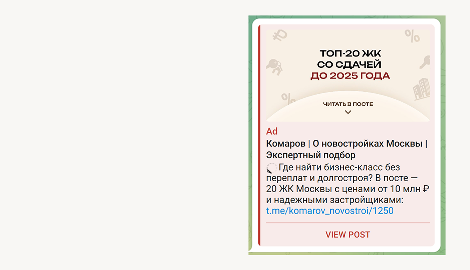
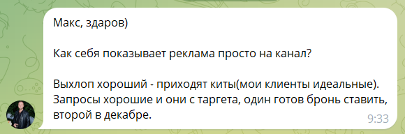

Ситуация и задача
Клиент — частный агент, работающий с новостройками бизнес и премиум-класса в Москве, сегмент от 15 млн ₽. На старте канал имел 2 200 подписчиков. Основной трафик шёл из Яндекс.Директа, но количество заявок было ограниченным, системы прогрева не было, а зависимость от одного канала создавала риски.
Главное возражение клиента: «Подписчики из Telegram Ads будут дорогими и нецелевыми». Цель — опровергнуть это и привлекать целевых подписчиков до 350 ₽, готовых консультироваться и покупать недвижимость.
Что было сделано
Дизайн креативов
В объявлениях делался акцент на конкретный сегмент — новостройки бизнес и премиум-класса от 15 млн ₽. Ценовая планка прямо в тексте работала как фильтр: нецелевая аудитория просто не реагировала. Визуал — под стать аудитории: статусный, без лишнего шума.

Результаты за 7 месяцев
Отзыв клиента

— Клиент, агент по новостройкам бизнес и премиум-класса, Москва
Хотите такой же результат?
Расскажите о своём проекте — разберу ситуацию и предложу стратегию
Написать в Telegram →